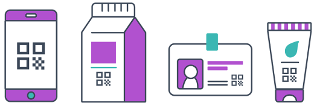

Using QR codes in social networks
To create QR code for link, video or image - click on button below.
Generate QR CodeNow every social media user is accustomed to convenience and simplicity. That is why most companies to simplify communication and interaction of customers with social networks create QR codes for all their networks and messengers, for example, for facebook, for whatsapp, linkedin and etc.
Why create social media codes?
QR codes display all social media profiles on a page that can be scanned with mobile devices. You can use codes for different purposes. For example:
For ordinary users this is a convenient opportunity to exchange contacts
For business account owners QR codes make it easier to interact with customers
You can add QR codes on the packaging of any products, leaflets or posters, and this codes will redirect the audience to the social media profile
For example, if the QR code is created on the facebook page, this instantly allows to present your offers to customers
And at the end, it is more convenient to encrypt the url of the social networks profile into the QR code, which, by the way, can be done with the logo and according to your own design
You can learn more about the ease of creation and the advantages of using QR code for facebook below.
How the QR code for facebook works?
QR code to facebook page is a specific QR Code that connects to facebook page and provides user information, exactly the URL of the profile. User scans the QR Code with a mobile device and goes to the Facebook page. User can encrypt any profile in QR code, for example, a personal account or Facebook business page.
Benefits of the Facebook page QR code
There are many internet services with qr code creator consequently everyone can generate qr code for facebook page. This makes it possible to encode direct link to Facebook profile. Also, QR code for facebook can display additional information (images, links on other pages or sites).
How to make a QR code to facebook page?
Users can generate qr code for url on our website, this is a process in a couple of clicks. All you need to do is insert a reference to the Facebook page and generate the code.
Where to find the best qr code generator?
Our site provides the necessary options for generating QR code for facebook. Besides, by using our website, the users can make QR code according to their own design or with a unique company logo, the Facebook page of which is encrypted in the code.
